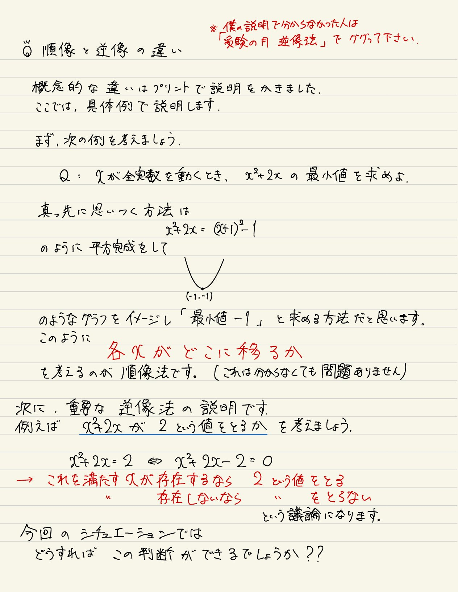
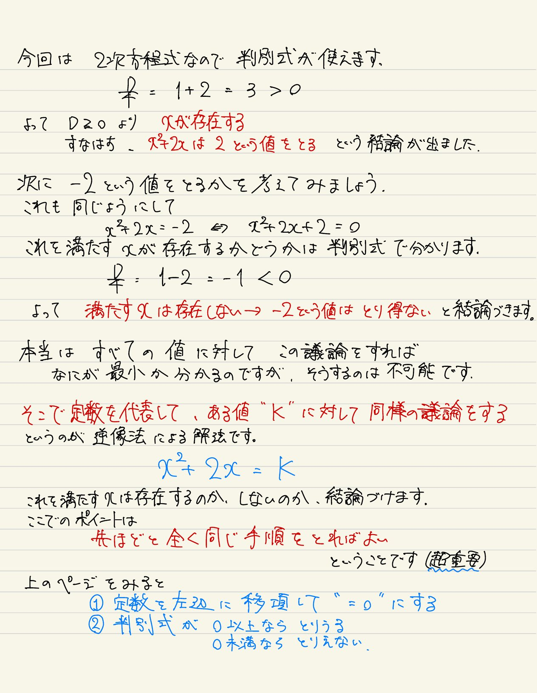
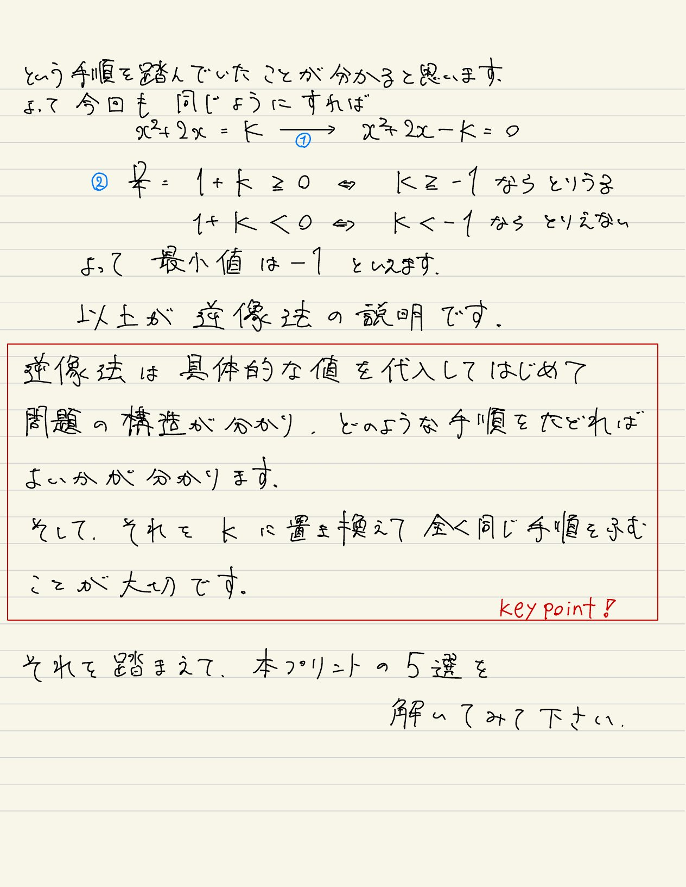
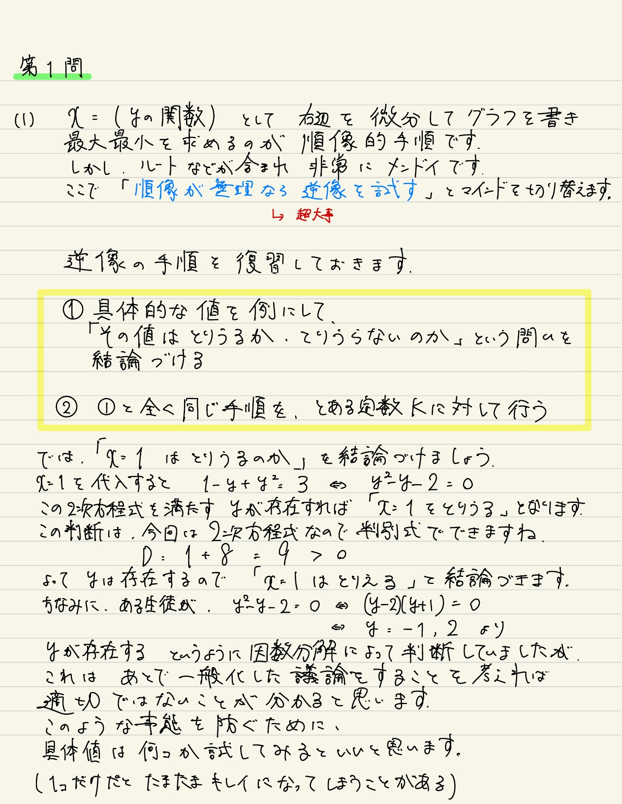
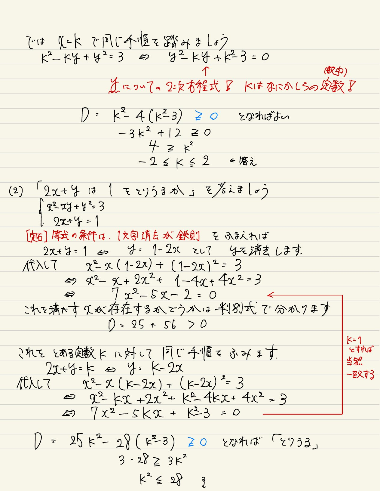
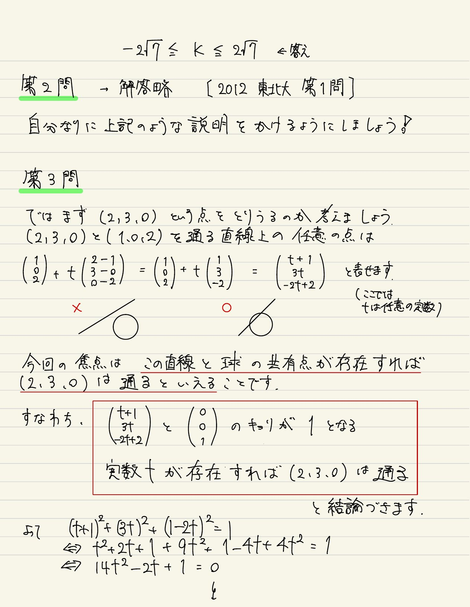
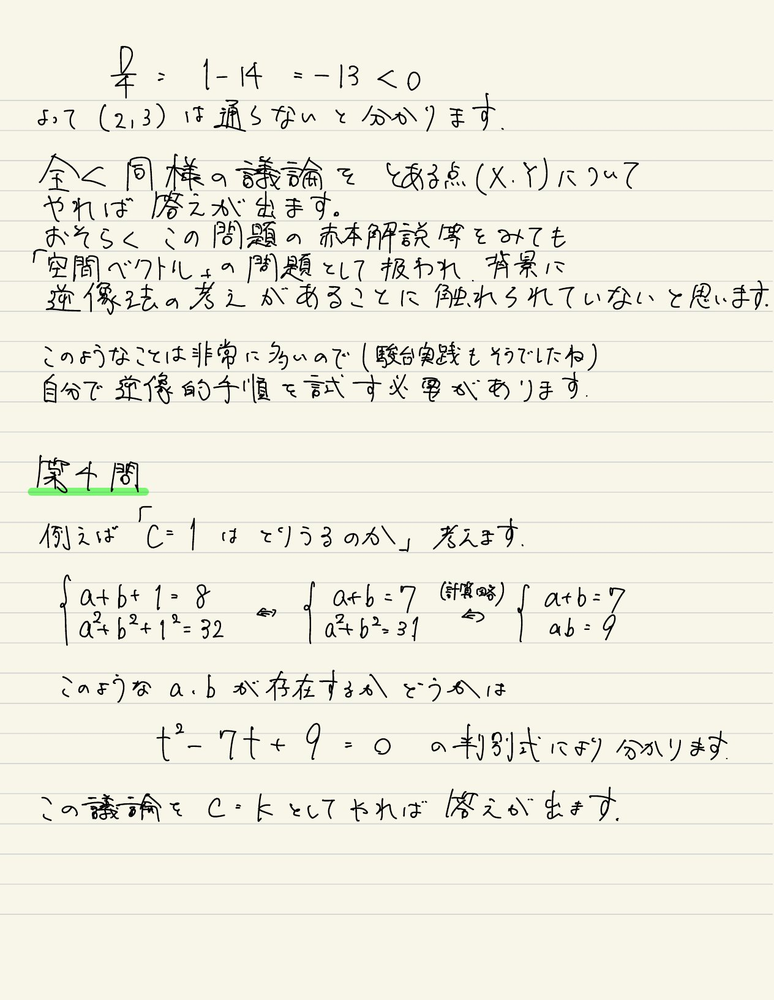
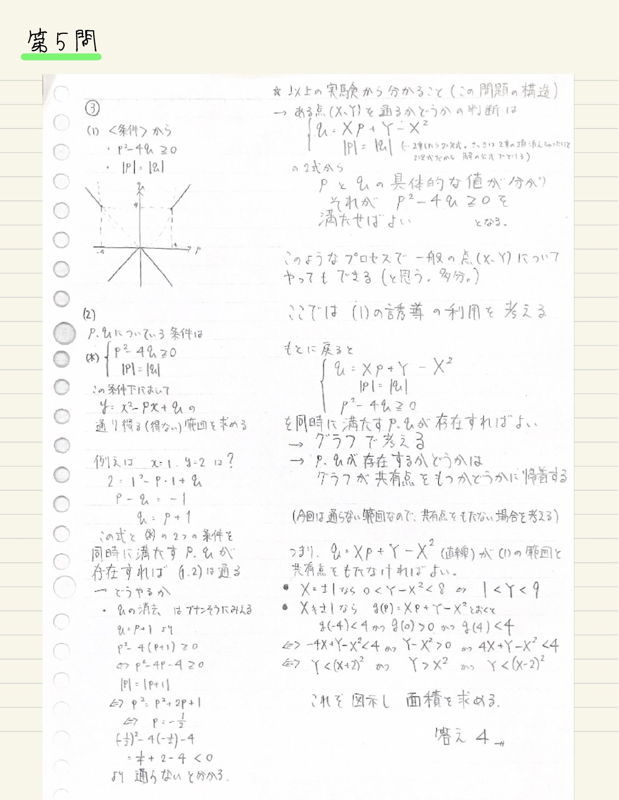
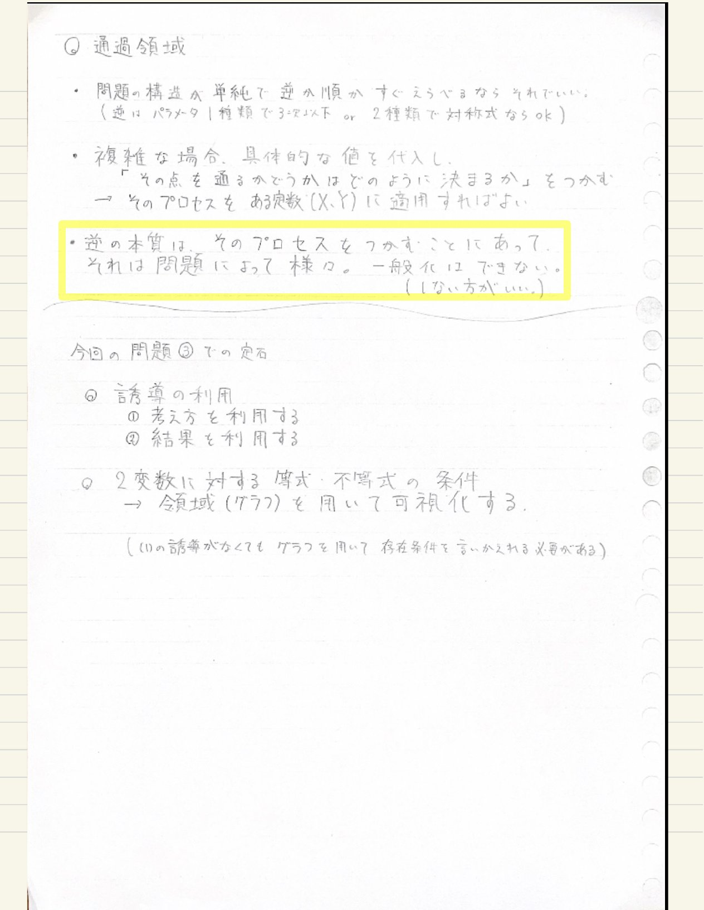

逆像法 補助教材 解説ノート
松濤舎
順像と逆像の違い
具体例を通じて、逆像法の考え方を丁寧に解説しています。



第1問 解説
\(x^2 - xy + y^2 = 3\) における最大最小を逆像法で求めます。


第2問
2012 東北大 第1問 — 解答略。自分なりに逆像法の説明を書けるようにしましょう。
第3問 解説
空間ベクトルの問題を逆像法の視点で解きます。


第4問 解説
対称式の条件下での最大値を逆像法で求めます。
第5問 解説
放物線の通過領域を逆像法と誘導の利用で求めます。

通過領域まとめ
逆像法の本質と通過領域問題での定石をまとめています。
